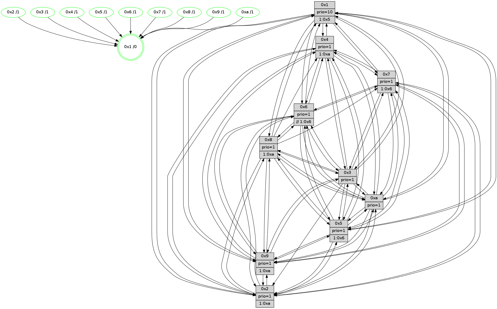

>> << IDX [start] -100 -25 -5 +0 +5 +25 +100 [1390.00662017]
 Previous packets
----------------------------------------------------------------------
1385.174705 beacon01(faad) #0 coord=01,02,03,04,05,06,07,0a,09,08 cycle=688.0ms assoc
-- color-indic=1 64 5e 3f
1385.184687 beacon02(faad) #0 coord=01,02,03,04,05,06,07,0a,09,08 cycle=688.0ms assoc 64 cd 0e
1385.194686 beacon03(faad) #0 coord=01,02,03,04,05,06,07,0a,09,08 cycle=688.0ms assoc 64 b7 43
1385.204687 beacon04(faad) #0 coord=01,02,03,04,05,06,07,0a,09,08 cycle=688.0ms assoc 64 c0 a9
1385.214687 beacon05(faad) #0 coord=01,02,03,04,05,06,07,0a,09,08 cycle=688.0ms assoc 64 ba e4
1385.224688 beacon06(faad) #0 coord=01,02,03,04,05,06,07,0a,09,08 cycle=688.0ms assoc 64 34 33
1385.234687 beacon07(faad) #0 coord=01,02,03,04,05,06,07,0a,09,08 cycle=688.0ms assoc 64 4e 7e
1385.244694 beacon0a(faad) #0 coord=01,02,03,04,05,06,07,0a,09,08 cycle=688.0ms assoc 64 3f 75
1385.264693 beacon08(faad) #0 coord=01,02,03,04,05,06,07,0a,09,08 cycle=688.0ms assoc 64 cb ef
1385.275914 [Hello(10): seq=816 sym=6,2,3,8,7,5,9,4,1 sysInfo=hasWarning stat=6:5,3,0,4/2:6,12,2,0/3:12,13,6,14/8:7,8,15,3/7:12,15,14,9/5:12,0,13,1/9:0,3,2,0/4:2,10,9,2/1:9,10,15,1]
1385.278959 [STC(3)->1 #0.236 tree-change,inconsistent-stability,stable,to-color d=1]
1385.283585 [STC(6)->1 #0.236 tree-change,inconsistent-stability,stable,to-color d=1]
1385.285792 [Hello(9): seq=827 sym=2,5,3,4,7,6,8,10,1 sysInfo=hasWarning stat=2:6,9,14,11/5:1,9,1,8/3:8,11,8,3/4:14,6,3,2/7:13,14,8,4/6:7,0,14,14/8:11,11,3,6/10:4,4,0,0/1:12,12,4,1]
1385.289493 [Color(1) seq=563 @0:0 prio=10 >1.@4,1.@5,1.@9,1.@a]
1385.291253 [STC(5)->1 #0.236 tree-change,inconsistent-stability,stable,to-color d=1]
1385.294080 [Hello(7): seq=883 sym=2,3,5,6,4,9,10,1 sysInfo=hasWarning stat=2:1,15,3,4/3:9,6,7,3/5:6,3,12,3/6:4,1,6,12/4:13,8,5,1/9:3,11,8,1/10:11,5,15,7/1:15,10,1,0]
1385.296670 [TreeStatus(3)-.->1 #0.236 tree-change,inconsistent-stability,stable child=1]
1385.299633 [STC(8)->1 #0.236 tree-change,inconsistent-stability,stable,to-color d=1]
1385.301690 [STC(7)->1 #0.236 tree-change,inconsistent-stability,stable,to-color d=1]
1385.303200 [Color(8) seq=482 @0:0 prio=1 >1.@a]
1385.305130 [Color(5) seq=430 @0:0 prio=1 >1.@4,1.@6,1.@7,1.@8]
1385.307285 [Color(7) seq=411 @0:0 prio=1 >1.@5,1.@6,1.@8,1.@a]
1385.309577 [STC(4)->1 #0.236 tree-change,inconsistent-stability,stable,to-color d=1]
1385.311863 [Color(4) seq=422 @0:0 prio=1 >1.@5,1.@a]
----------------------------------------------------------------------
1385.962836 beacon01(faad) #0 coord=01,02,03,04,05,06,07,0a,09,08 cycle=688.0ms assoc
-- color-indic=1 64 4a 51
1385.972819 beacon02(faad) #0 coord=01,02,03,04,05,06,07,0a,09,08 cycle=688.0ms assoc 64 d9 60
1385.982818 beacon03(faad) #0 coord=01,02,03,04,05,06,07,0a,09,08 cycle=688.0ms assoc 64 a3 2d
1385.992819 beacon04(faad) #0 coord=01,02,03,04,05,06,07,0a,09,08 cycle=688.0ms assoc 64 d4 c7
1386.002820 beacon05(faad) #0 coord=01,02,03,04,05,06,07,0a,09,08 cycle=688.0ms assoc 64 ae 8a
1386.012820 beacon06(faad) #0 coord=01,02,03,04,05,06,07,0a,09,08 cycle=688.0ms assoc 64 20 5d
1386.022819 beacon07(faad) #0 coord=01,02,03,04,05,06,07,0a,09,08 cycle=688.0ms assoc 64 5a 10
1386.032824 beacon0a(faad) #0 coord=01,02,03,04,05,06,07,0a,09,08 cycle=688.0ms assoc 64 2b 1b
1386.052824 beacon08(faad) #0 coord=01,02,03,04,05,06,07,0a,09,08 cycle=688.0ms assoc 64 df 81
1386.064055 [Hello(1): seq=793 sym=4,2,9,5,10,3,8,6,7 sysInfo=coloring-mode-on,ColoringModeRequestCalled stat=4:15,12,8,3/2:0,3,15,5/9:14,9,3,1/5:3,10,6,9/10:0,9,3,8/3:2,12,3,11/8:15,4,2,3/6:4,9,2,1/7:15,7,10,1]
1386.068358 [Color(9) seq=443 @0:0 prio=1 >1.@5,1.@a]
1386.072265 [Hello(3): seq=884 sym=1,7,6,2,4,8,9,10,5 sysInfo=hasWarning stat=1:7,2,7,0/7:6,8,10,14/6:9,0,4,1/2:0,10,15,2/4:14,2,12,13/8:14,7,4,5/9:12,5,9,0/10:14,13,14,5/5:10,13,12,1]
1386.076038 [Color(3) seq=513 @0:0 prio=1]
1386.077670 [Hello(2): seq=880 sym=4,5,7,6,3,9,8,10,1 sysInfo=hasWarning stat=4:2,11,6,13/5:2,6,15,3/7:0,9,8,1/6:8,13,6,1/3:3,7,4,1/9:7,7,6,9/8:6,8,3,12/10:1,15,5,11/1:2,12,14,0]
1386.082400 [Color(2) seq=460 @0:0 prio=1 >1.@a]
1386.084087 [Color(10) seq=473 @0:0 prio=1]
1386.090822 [Hello(5): seq=884 sym=7,6,4,3,1,9,8,10,2 sysInfo=hasWarning stat=7:11,2,14,0/6:12,1,11,4/4:0,9,4,15/3:2,10,7,2/1:7,0,7,0/9:14,8,14,10/8:12,0,1,4/10:13,8,1,9/2:2,11,7,7]
1386.093762 [Hello(6): seq=884 sym=2,3,5,4,7,9,8,10,1 sysInfo=hasWarning stat=2:4,9,2,0/3:3,6,2,1/5:2,2,5,4/4:10,11,9,8/7:13,10,4,15/9:3,6,13,10/8:7,0,13,6/10:8,11,6,13/1:13,12,4,1]
1386.098811 [Color(6) seq=516 @0:0 prio=1 >>1.@5,1.@6,1.@7]
----------------------------------------------------------------------
1386.750967 beacon01(faad) #0 coord=01,02,03,04,05,06,07,0a,09,08 cycle=688.0ms assoc
-- color-indic=1 64 f6 54
1386.760950 beacon02(faad) #0 coord=01,02,03,04,05,06,07,0a,09,08 cycle=688.0ms assoc 64 65 65
1386.770949 beacon03(faad) #0 coord=01,02,03,04,05,06,07,0a,09,08 cycle=688.0ms assoc 64 1f 28
1386.780949 beacon04(faad) #0 coord=01,02,03,04,05,06,07,0a,09,08 cycle=688.0ms assoc 64 68 c2
1386.790949 beacon05(faad) #0 coord=01,02,03,04,05,06,07,0a,09,08 cycle=688.0ms assoc 64 12 8f
1386.800950 beacon06(faad) #0 coord=01,02,03,04,05,06,07,0a,09,08 cycle=688.0ms assoc 64 9c 58
1386.810951 beacon07(faad) #0 coord=01,02,03,04,05,06,07,0a,09,08 cycle=688.0ms assoc 64 e6 15
1386.820955 beacon0a(faad) #0 coord=01,02,03,04,05,06,07,0a,09,08 cycle=688.0ms assoc 64 97 1e
1386.840955 beacon08(faad) #0 coord=01,02,03,04,05,06,07,0a,09,08 cycle=688.0ms assoc 64 63 84
1386.852818 [Hello(9): seq=828 sym=2,5,3,4,7,6,8,10,1 sysInfo=hasWarning stat=2:7,10,14,11/5:2,10,2,8/3:9,12,8,4/4:14,7,4,2/7:14,15,9,4/6:8,1,14,14/8:11,12,4,6/10:4,5,0,0/1:13,13,4,1]
1386.856504 [Color(5) seq=431 @0:0 prio=1 >1.@6,1.@7,1.@8,1.@9]
1386.858487 [Hello(10): seq=817 sym=6,2,3,8,7,5,9,4,1 sysInfo=hasWarning stat=6:6,4,1,4/2:6,12,2,0/3:12,13,7,15/8:8,9,0,3/7:13,0,15,9/5:13,1,14,1/9:1,3,2,0/4:2,11,10,2/1:10,11,15,1]
1386.860989 [Hello(7): seq=884 sym=2,3,5,6,4,9,10,1 sysInfo=hasWarning stat=2:2,0,3,4/3:10,7,8,3/5:7,3,12,3/6:5,2,6,12/4:13,9,6,1/9:3,12,8,1/10:12,6,15,7/1:0,10,1,0]
1386.863901 [Color(8) seq=483 @0:0 prio=1 >1.@a]
1386.866700 [Color(7) seq=412 @0:0 prio=1 >1.@5,1.@6,1.@8,1.@a]
1386.869118 [Color(1) seq=564 @0:0 prio=10 >1.@5,1.@9,1.@a]
1386.874630 [Hello(4): seq=884 sym=5,6,2,3,9,7,10,1 sysInfo= stat=5:5,15,8,2/6:15,2,14,15/2:7,0,5,1/3:13,13,0,15/9:4,5,13,1/7:8,12,1,0/10:0,1,0,14/1:5,1,3,1]
1386.878904 [Color(4) seq=423 @0:0 prio=1 >1.@5,1.@a]
----------------------------------------------------------------------
1387.539097 beacon01(faad) #0 coord=01,02,03,04,05,06,07,0a,09,08 cycle=688.0ms assoc
-- color-indic=1 64 32 5a
1387.549080 beacon02(faad) #0 coord=01,02,03,04,05,06,07,0a,09,08 cycle=688.0ms assoc 64 a1 6b
1387.559080 beacon03(faad) #0 coord=01,02,03,04,05,06,07,0a,09,08 cycle=688.0ms assoc 64 db 26
1387.569079 beacon04(faad) #0 coord=01,02,03,04,05,06,07,0a,09,08 cycle=688.0ms assoc 64 ac cc
1387.579081 beacon05(faad) #0 coord=01,02,03,04,05,06,07,0a,09,08 cycle=688.0ms assoc 64 d6 81
1387.589079 beacon06(faad) #0 coord=01,02,03,04,05,06,07,0a,09,08 cycle=688.0ms assoc 64 58 56
1387.599079 beacon07(faad) #0 coord=01,02,03,04,05,06,07,0a,09,08 cycle=688.0ms assoc 64 22 1b
1387.609085 beacon0a(faad) #0 coord=01,02,03,04,05,06,07,0a,09,08 cycle=688.0ms assoc 64 53 10
1387.629085 beacon08(faad) #0 coord=01,02,03,04,05,06,07,0a,09,08 cycle=688.0ms assoc 64 a7 8a
1387.640316 [Hello(5): seq=885 sym=7,6,4,3,1,9,8,10,2 sysInfo=hasWarning stat=7:12,3,14,0/6:13,2,11,4/4:1,10,4,15/3:2,10,7,2/1:7,1,7,0/9:15,8,14,10/8:12,1,1,4/10:14,8,1,9/2:2,11,7,7]
1387.644382 [Color(10) seq=474 @0:0 prio=1]
1387.645788 [Hello(3): seq=885 sym=1,7,6,2,4,8,9,10,5 sysInfo=hasWarning stat=1:8,3,7,0/7:7,9,10,14/6:10,1,4,1/2:1,11,15,2/4:15,3,12,13/8:14,8,4,5/9:13,5,9,0/10:15,14,14,5/5:11,14,12,1]
1387.651776 [Hello(2): seq=881 sym=4,5,7,6,3,9,8,10,1 sysInfo=hasWarning stat=4:3,12,6,13/5:3,7,15,3/7:1,10,8,1/6:9,14,6,1/3:3,7,4,1/9:8,7,6,9/8:6,9,3,12/10:2,0,5,11/1:3,13,14,0]
1387.654380 [Color(6) seq=517 @0:0 prio=1 >>1.@6,1.@7,1.@8]
1387.658877 [Color(2) seq=461 @0:0 prio=1 >1.@a]
1387.661345 [Hello(1): seq=794 sym=4,2,9,5,10,3,8,6,7 sysInfo=coloring-mode-on,ColoringModeRequestCalled stat=4:0,13,8,3/2:1,4,15,5/9:15,10,3,1/5:4,10,6,9/10:0,10,3,8/3:3,13,3,11/8:15,4,2,3/6:5,10,2,1/7:15,7,10,1]
1387.670278 [Color(3) seq=514 @0:0 prio=1]
----------------------------------------------------------------------
1388.327226 beacon01(faad) #0 coord=01,02,03,04,05,06,07,0a,09,08 cycle=688.0ms assoc
-- color-indic=1 64 8e 5f
1388.337210 beacon02(faad) #0 coord=01,02,03,04,05,06,07,0a,09,08 cycle=688.0ms assoc 64 1d 6e
1388.347210 beacon03(faad) #0 coord=01,02,03,04,05,06,07,0a,09,08 cycle=688.0ms assoc 64 67 23
1388.357211 beacon04(faad) #0 coord=01,02,03,04,05,06,07,0a,09,08 cycle=688.0ms assoc 64 10 c9
1388.367210 beacon05(faad) #0 coord=01,02,03,04,05,06,07,0a,09,08 cycle=688.0ms assoc 64 6a 84
1388.377209 beacon06(faad) #0 coord=01,02,03,04,05,06,07,0a,09,08 cycle=688.0ms assoc 64 e4 53
1388.387211 beacon07(faad) #0 coord=01,02,03,04,05,06,07,0a,09,08 cycle=688.0ms assoc 64 9e 1e
1388.397214 beacon0a(faad) #0 coord=01,02,03,04,05,06,07,0a,09,08 cycle=688.0ms assoc 64 ef 15
1388.417215 beacon08(faad) #0 coord=01,02,03,04,05,06,07,0a,09,08 cycle=688.0ms assoc 64 1b 8f
1388.429388 [Hello(9): seq=829 sym=2,5,3,4,7,6,8,10,1 sysInfo=hasWarning stat=2:8,11,14,11/5:3,11,2,8/3:9,13,8,4/4:15,8,4,2/7:15,0,9,4/6:8,2,14,14/8:12,13,4,6/10:4,5,0,0/1:14,14,4,1]
1388.432428 [Color(5) seq=432 @0:0 prio=1 >1.@6,1.@7,1.@8,1.@9]
1388.434316 [Hello(8): seq=829 sym=5,2,3,7,9,6,4,10,1 sysInfo=hasWarning stat=5:7,3,8,1/2:15,11,11,12/3:8,12,1,4/7:10,11,3,1/9:13,4,8,4/6:12,11,15,0/4:4,9,2,1/10:6,15,14,5/1:11,7,4,0]
1388.437134 [Color(8) seq=484 @0:0 prio=1 >1.@a]
1388.438775 [Hello(4): seq=885 sym=5,6,2,3,9,7,10,1 sysInfo= stat=5:6,15,8,2/6:15,3,14,15/2:8,1,5,1/3:14,14,0,15/9:5,6,13,1/7:8,12,1,0/10:0,2,0,14/1:6,1,3,1]
1388.441866 [Hello(7): seq=885 sym=2,3,5,6,4,9,10,1 sysInfo=hasWarning stat=2:3,1,3,4/3:11,8,8,3/5:8,3,12,3/6:6,3,6,12/4:14,10,6,1/9:4,12,8,1/10:12,7,15,7/1:1,11,1,0]
1388.444476 [Color(4) seq=424 @0:0 prio=1 >1.@a]
1388.447533 [Hello(10): seq=818 sym=6,2,3,8,7,5,9,4,1 sysInfo=hasWarning stat=6:7,5,1,4/2:7,13,2,0/3:13,14,7,15/8:8,10,0,3/7:14,1,15,9/5:14,1,14,1/9:1,3,2,0/4:3,12,10,2/1:11,12,15,1]
1388.450109 [STC(1) #0.237 tree-change,inconsistent-stability,stable,to-color d=0]
1388.452063 [Color(1) seq=565 @0:0 prio=10 >1.@5,1.@9,1.@a]
1388.457743 [Color(7) seq=413 @0:0 prio=1 >1.@6,1.@8,1.@a]
----------------------------------------------------------------------
1389.115358 beacon01(faad) #0 coord=01,02,03,04,05,06,07,0a,09,08 cycle=688.0ms assoc
-- color-indic=1 64 ba 47
1389.125340 beacon02(faad) #0 coord=01,02,03,04,05,06,07,0a,09,08 cycle=688.0ms assoc 64 29 76
1389.135340 beacon03(faad) #0 coord=01,02,03,04,05,06,07,0a,09,08 cycle=688.0ms assoc 64 53 3b
1389.145341 beacon04(faad) #0 coord=01,02,03,04,05,06,07,0a,09,08 cycle=688.0ms assoc 64 24 d1
1389.155340 beacon05(faad) #0 coord=01,02,03,04,05,06,07,0a,09,08 cycle=688.0ms assoc 64 5e 9c
1389.165340 beacon06(faad) #0 coord=01,02,03,04,05,06,07,0a,09,08 cycle=688.0ms assoc 64 d0 4b
1389.175341 beacon07(faad) #0 coord=01,02,03,04,05,06,07,0a,09,08 cycle=688.0ms assoc 64 aa 06
1389.185346 beacon0a(faad) #0 coord=01,02,03,04,05,06,07,0a,09,08 cycle=688.0ms assoc 64 db 0d
1389.205347 beacon08(faad) #0 coord=01,02,03,04,05,06,07,0a,09,08 cycle=688.0ms assoc 64 2f 97
1389.216591 [Hello(1): seq=795 sym=4,2,9,5,10,3,8,6,7 sysInfo=coloring-mode-on,ColoringModeRequestCalled stat=4:0,13,8,3/2:1,4,15,5/9:0,10,3,1/5:4,10,6,9/10:0,10,3,8/3:3,14,3,11/8:15,4,2,3/6:5,10,2,1/7:15,8,10,1]
1389.219837 [Hello(5): seq=886 sym=7,6,4,3,1,9,8,10,2 sysInfo=hasWarning stat=7:13,4,14,0/6:13,3,11,4/4:2,11,4,15/3:3,11,7,2/1:8,2,8,0/9:0,9,14,10/8:13,2,1,4/10:15,9,1,9/2:3,12,7,7]
1389.223516 [Hello(2): seq=882 sym=4,5,7,6,9,8,10,1 sysInfo=hasWarning stat=4:4,13,6,13/5:4,8,15,3/7:2,11,8,1/6:9,14,6,1/9:9,7,6,9/8:7,10,3,12/10:3,0,5,11/1:4,14,15,0]
1389.225887 [Hello(6): seq=886 sym=2,3,5,4,7,9,8,10,1 sysInfo=hasWarning stat=2:4,10,2,0/3:3,7,2,1/5:3,4,5,4/4:12,13,9,8/7:15,12,4,15/9:5,6,13,10/8:8,2,13,6/10:10,11,6,13/1:15,14,5,1]
1389.229100 [STC(10)->1 #0.237 tree-change,inconsistent-stability,stable,to-color d=1]
1389.232987 [Color(10) seq=475 @0:0 prio=1]
1389.235259 [STC(6)->1 #0.237 tree-change,inconsistent-stability,stable,to-color d=1]
1389.236572 [STC(8)->1 #0.237 tree-change,inconsistent-stability,stable,to-color d=1]
1389.238021 [STC(2)->1 #0.237 tree-change,inconsistent-stability,stable,to-color d=1]
1389.239478 [STC(4)->1 #0.237 tree-change,inconsistent-stability,stable,to-color d=1]
1389.245128 [STC(3)->1 #0.237 tree-change,inconsistent-stability,stable,to-color d=1]
1389.247072 [Color(3) seq=515 @0:0 prio=1]
1389.254455 [STC(9)->1 #0.237 tree-change,inconsistent-stability,stable,to-color d=1]
1389.257374 [TreeStatus(9)-.->1 #0.237 tree-change,inconsistent-stability,stable child=1]
1389.259541 [Color(9) seq=445 @0:0 prio=1 >1.@a]
----------------------------------------------------------------------
1389.903487 beacon01(faad) #0 coord=01,02,03,04,05,06,07,0a,09,08 cycle=688.0ms assoc
-- color-indic=1 64 06 42
1389.913470 beacon02(faad) #0 coord=01,02,03,04,05,06,07,0a,09,08 cycle=688.0ms assoc 64 95 73
1389.923470 beacon03(faad) #0 coord=01,02,03,04,05,06,07,0a,09,08 cycle=688.0ms assoc 64 ef 3e
1389.933470 beacon04(faad) #0 coord=01,02,03,04,05,06,07,0a,09,08 cycle=688.0ms assoc 64 98 d4
1389.943469 beacon05(faad) #0 coord=01,02,03,04,05,06,07,0a,09,08 cycle=688.0ms assoc 64 e2 99
1389.953470 beacon06(faad) #0 coord=01,02,03,04,05,06,07,0a,09,08 cycle=688.0ms assoc 64 6c 4e
1389.963471 beacon07(faad) #0 coord=01,02,03,04,05,06,07,0a,09,08 cycle=688.0ms assoc 64 16 03
1389.973475 beacon0a(faad) #0 coord=01,02,03,04,05,06,07,0a,09,08 cycle=688.0ms assoc 64 67 08
1389.993476 beacon08(faad) #0 coord=01,02,03,04,05,06,07,0a,09,08 cycle=688.0ms assoc 64 93 92